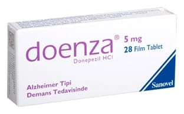

Doenza 5 mg Film Kaplı Tablet, 14 Tablet

Ne için kullanılır
KT · Bölüm 1DOENZA (Donepezil hidroklorür) 5 mg film kaplı tabletler, beyaz renkli, yuvarlak film kaplı tabletler dir. Her film kaplı tablet 5 mg donepezil hidroklorür içerir. DOENZA, 14 ve 28 film kaplı tablet içeren blister ambalajlarda piyasaya sunulmuştur.
DOENZA, hafif ve orta şiddetli Alzheimer tipi bunama belirtilerinin tedavisinde kullanılır ve etkin maddesi donepezil hidroklorür, asetilkolinesteraz inhibitörleri olarak anılan bir ilaç sınıfına aittir.
DOENZA, yalnızca erişkin hastalarda kullanılır.